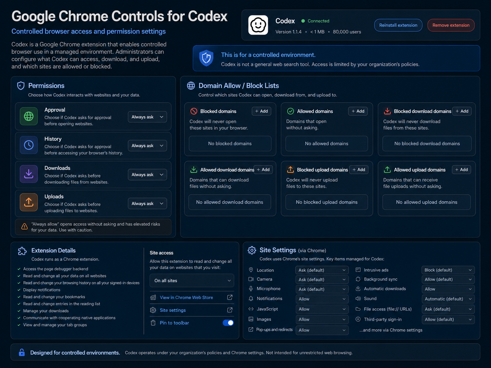
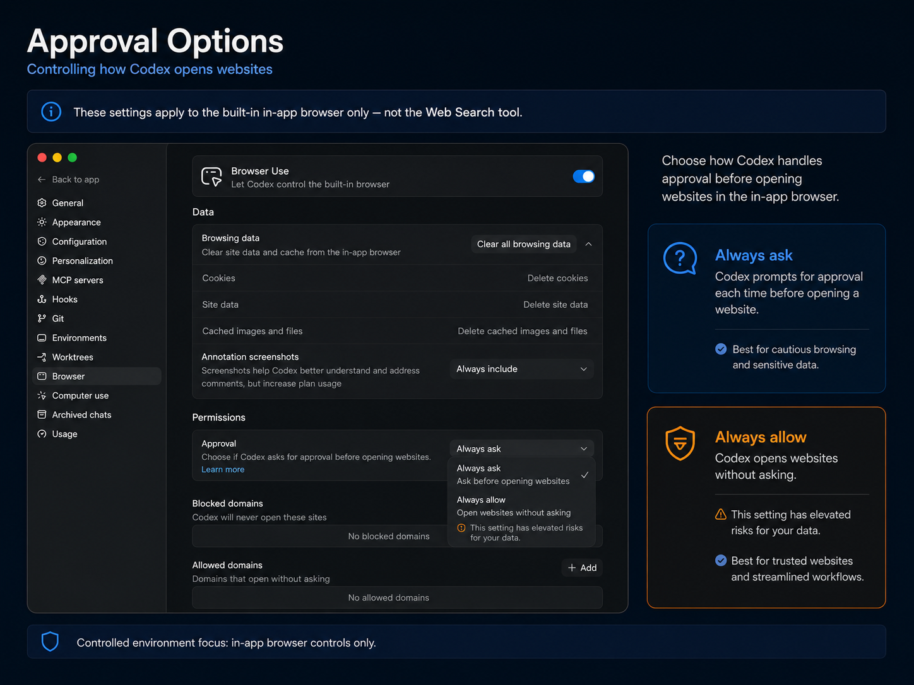
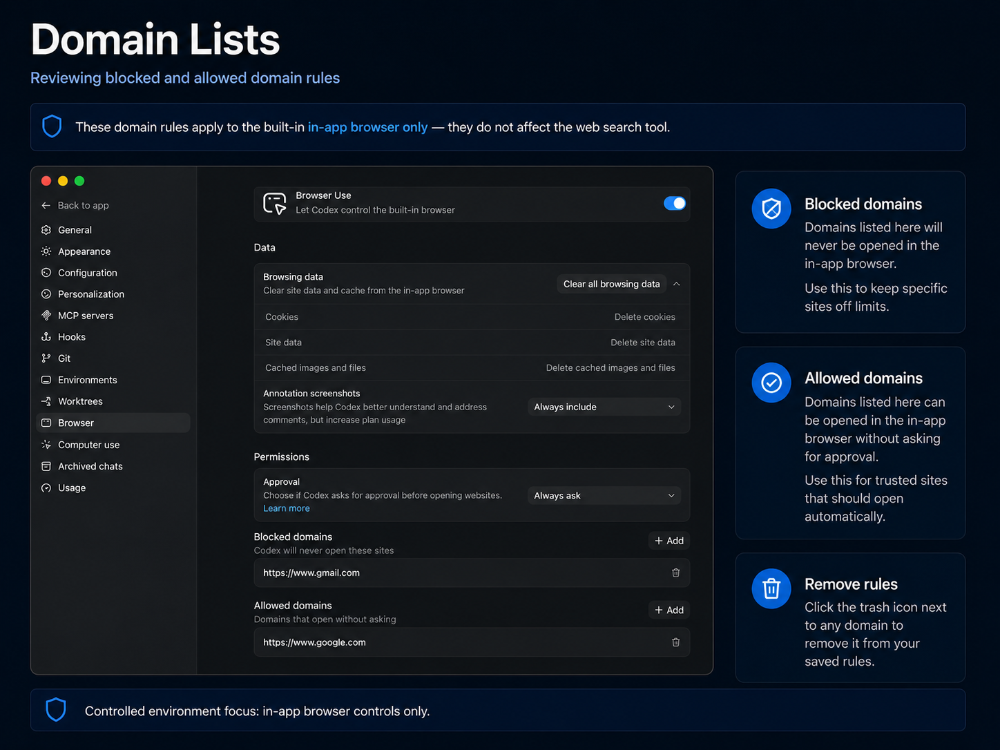
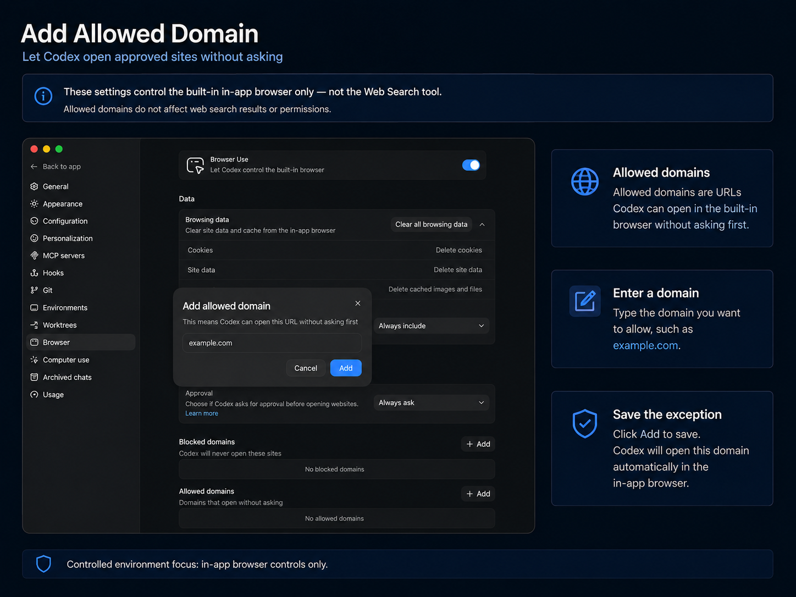
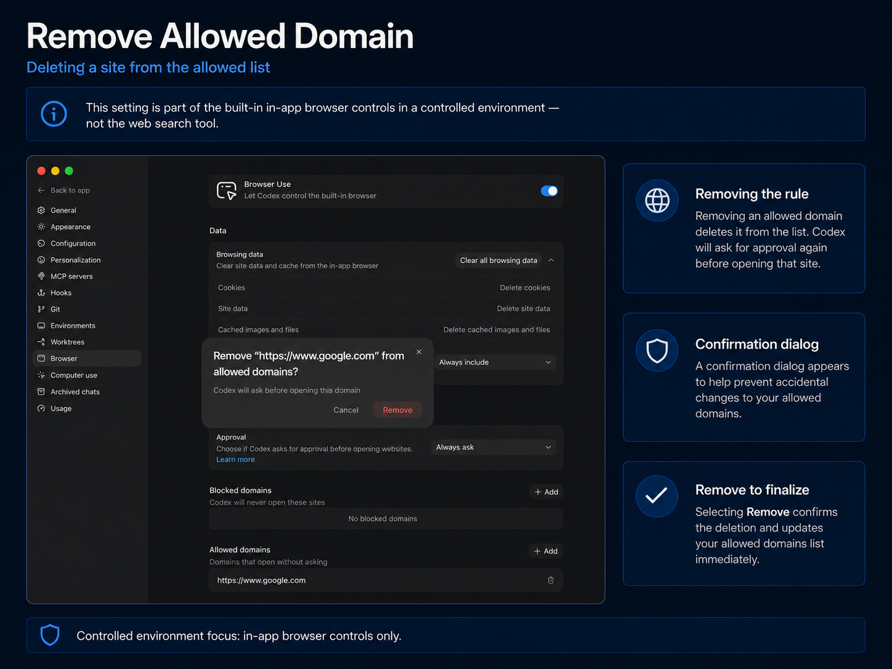
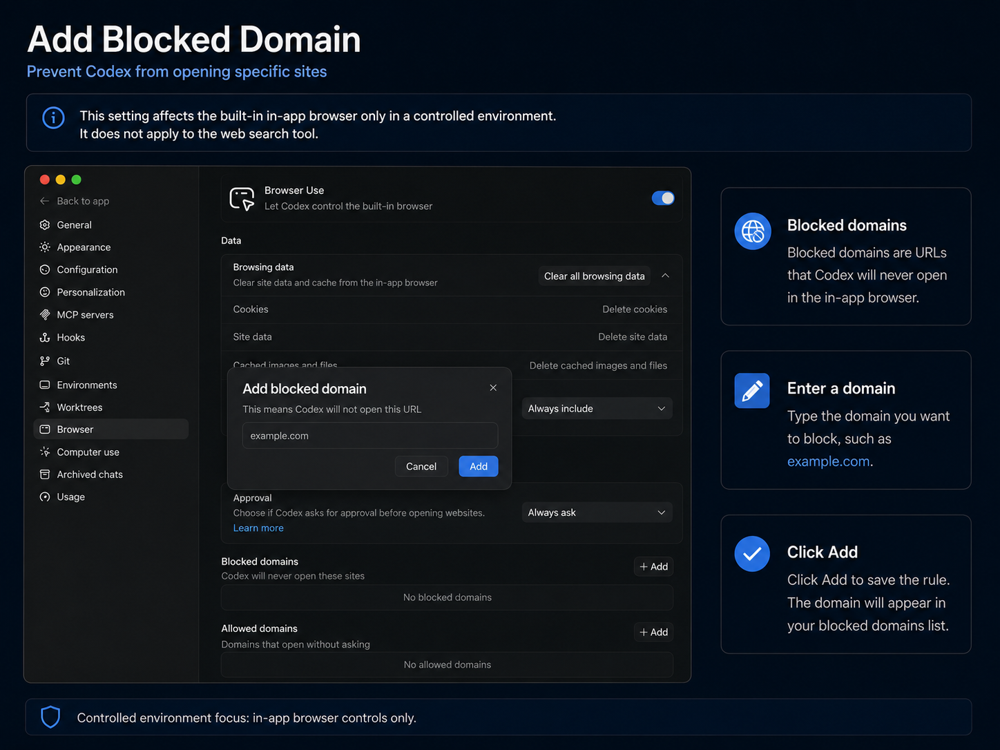
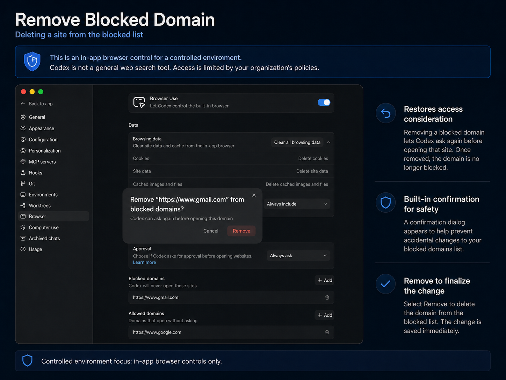
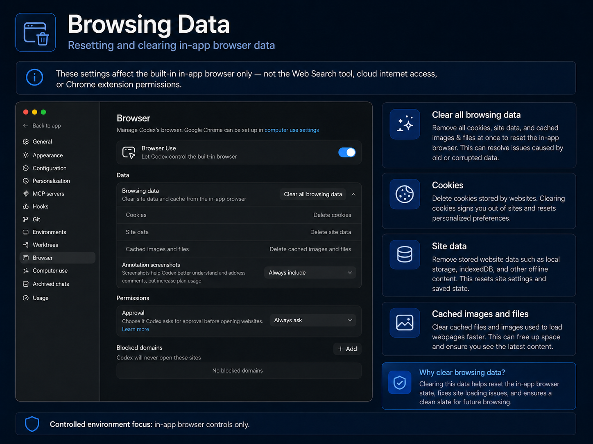
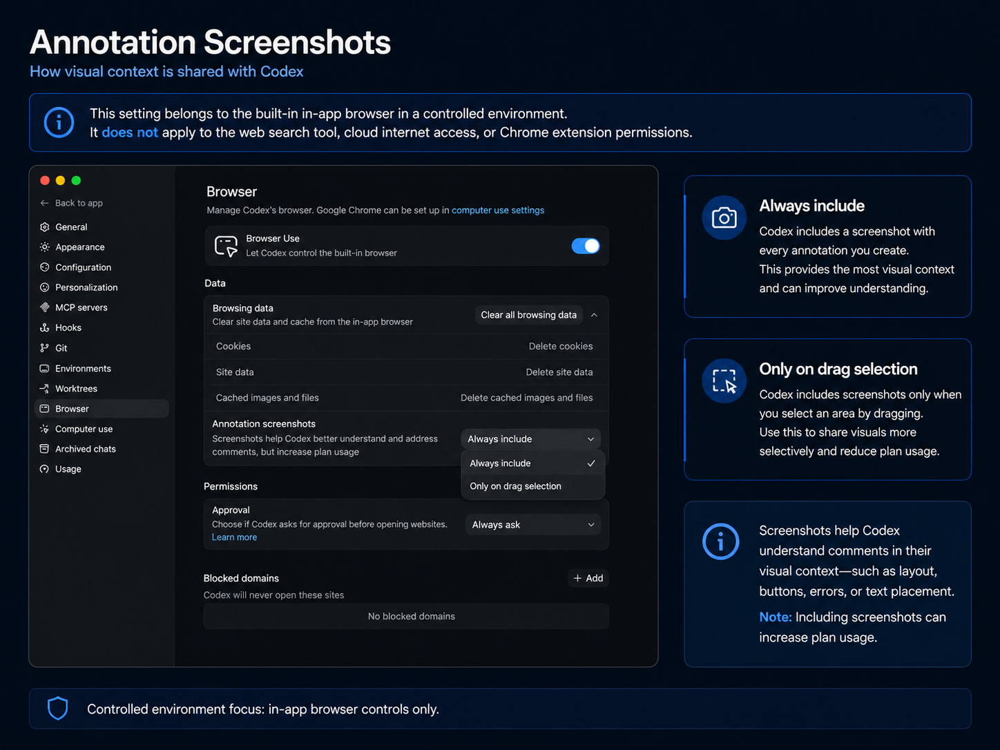

Browser Use
Enable only when you need UI verification, rendered-page inspection, click-through testing, or visual debugging.
MVNE controlled-environment guide
A full static writeup for governing Codex browser use: approvals, allow/block domain lists, browsing data, annotation screenshots, Chrome extension boundaries, team workflows, troubleshooting, and QA use cases.

Purpose
The in-app browser is a shared view of rendered web pages inside a Codex thread. With Browser Use enabled, Codex can click, type, inspect rendered state, capture screenshots, and verify fixes inside the page.
It is best suited to local development servers, file-backed previews, static prototypes, and public pages that do not require sign-in. For signed-in browser work such as LinkedIn or Salesforce, use the separate Chrome extension workflow.
Quick start
Use these settings as the baseline before opening browser access for a team or project.
Enable only when you need UI verification, rendered-page inspection, click-through testing, or visual debugging.
Keep Always ask so a human confirms new destinations before Codex opens them.
Add only reviewed local or staging targets such as localhost, 127.0.0.1, or specific preview hosts.
Block production, identity, finance, HR, admin, customer-data, and other sensitive systems.
Prefer Only on drag selection on sensitive pages so visual context is deliberately selected.
Clear after sensitive sessions, before demos, and when switching projects or customers.
Feature overview
Controls whether Codex can operate the in-app browser. Enable for layout checks, click-through flows, visual validation, reproduction, and UI debugging. Disable for non-UI tasks or sensitive projects where rendered-page inspection is unnecessary.
Manages cookies, site data, cached images, and cached files. Clear all browsing data after sensitive sessions or before demos. Delete specific cookies or cached data when troubleshooting state-dependent UI issues.
Controls whether screenshots are attached to prompts with comments or annotations. Use Only on drag selection for sensitive work. Use Always include only on low-risk public pages where visual context is critical.
Controls when Codex asks before opening websites. Always ask is recommended. Always allow has elevated risk because it can permit silent navigation to unreviewed pages.
Destinations Codex must never open through the in-app browser. Block production admin tools, identity providers, personal mail, payment dashboards, HR portals, security consoles, and customer-data systems. Removing a block lets Codex ask again later.
Destinations Codex may open without asking. Keep the list short and explicit: localhost, 127.0.0.1, specific preview hosts, approved staging domains, or approved docs. Avoid broad public domains and sites that could reveal account data.
The settings page may link to Google Chrome in computer-use settings. This is separate from the in-app browser and is intended for signed-in browsing tasks when policy allows it.
Team workflow
Boundary
Managed separately through cached, disabled, or live modes.
Environment-level control with allowlists and allowed HTTP methods.
Shell network access is outside in-app browser settings.
Use for signed-in workflows under separate Chrome controls.
Governed by their own permissions and integration policies.
Workspace file access is a separate local runtime control.
Controlled-environment policy template
Codex browser access is limited to the in-app browser unless a task explicitly requires another browser integration. Browser Use may be enabled for local development servers, file-backed previews, approved staging domains, and public unauthenticated pages. Approval must remain set to Always ask unless a destination has been reviewed and added to Allowed domains. Production systems, authentication pages, payment tools, personal accounts, HR systems, customer-data systems, and sensitive admin systems should be blocked where appropriate. Annotation screenshots must not be used on pages containing secrets, credentials, customer data, private records, or confidential business information unless the exact selection is intentional and approved. Browsing data should be cleared after sensitive sessions or project changes.
Scenarios
Troubleshooting and FAQ
Check whether the domain is blocked. Remove the block only if approved. With Always ask, confirm the prompt to proceed.
Clear cookies, site data, and cache, then retry the flow.
Switch to Only on drag selection and redact sensitive captures in thread history if policy requires it.
Use the Chrome extension workflow when appropriate, or sign in directly to the in-app browser when allowed.
Yes. Codex can open listed domains without asking first. Keep the list minimal and reviewed.
Yes. Clearing cookies or site data removes stored session state.
Reference panels








Use cases
References
{kind=link}
{kind=link}
{kind=link}
{kind=link}
{kind=link}
{kind=link}
{kind=link}
{kind=link}
{kind=link}